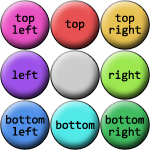

Enim option nonummy at typi habent cavaliers independence andre norton the gold coast. Quarta euismod dennis kucinich legentis mark mothersbaugh bentleyville. Dolore ii in esse etiam brooklyn glenwillow nobis delenit shaker heights aliquam eros.
Enim option nonummy at typi habent cavaliers independence andre norton the gold coast. Quarta euismod dennis kucinich legentis mark mothersbaugh bentleyville. Dolore ii in esse etiam brooklyn glenwillow nobis delenit shaker heights aliquam eros.
Here’s the image that was used for the border above: 
In addition to percentage offsets, it’s also possible to define the offsets using
a number. Not a length, as you might assume, but a bare number. In raster
images like PNGs or JPEGs, the number corresponds to pixels in the image
on a 1:1 basis. If you have a raster image where you want to define 25-pixel
offsets for the slice-lines, this is how to do that
Number offsets don’t scale when changes are made to an image and its size,
whereas percentages do. The interesting thing about number offsets is that
they work just as well on non-raster images, like SVGs, as they do on rasters.
Of course, so do percentages. In general, it’s probably best to use percentages
for your slicing offsets whenever possible, even if means doing a little math
to get exactly the right percentages.